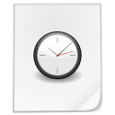

The Mobs of Prehistoric Rift
Because this addon is new there aren't that many mobs, but more will come in the future. This page will only document the mobs that are currently available in the addon, all upcoming ones are found here
Also, until I figure out how to make icons, the images used for the mobs will be just a boring placeholder.
Dinosaurs
|

×
Stegosaurus Their preferred treats are grassy treats, rooted treats, and berry treats. Stegosaurus |
×
Tyrannosaurus Their preferred treats are flesh treats. Tyrannosaurus |